Titer yield and productivity
No G1 versus LLPS measurements are present.
Can programmable microbial production improve glabridin manufacturing efficiency while avoiding new resource, environmental, safety and social burdens?
The analysis uses G1, low-expression OC/DMT without LLPS, as the baseline and the same OC/DMT background with LLPS as the main comparison. Host, medium, initial OD600, precursor concentration, temperature, RPM and fermentation conditions must be matched. Normal-expression constructs are references; optimization constructs do not replace the primary comparison.
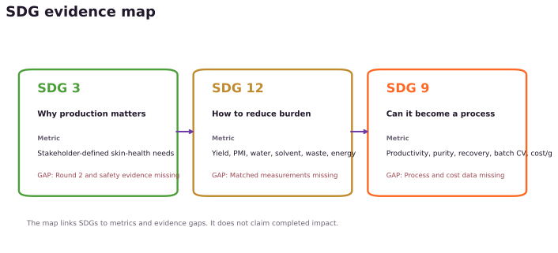
The intervention log separates documented concerns from planned validation. No stakeholder quotation is included without a traceable source.
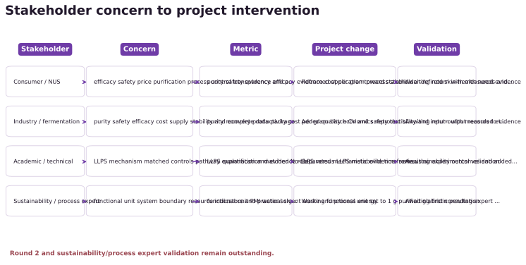
| Stakeholder | Concern | Metric | Project change | Validation |
|---|---|---|---|---|
| Consumer / NUS | efficacy safety price purification process control transparency and pigmentation-related needs | purity safety evidence efficacy evidence cost per gram process stability and evidence provenance | Reframed application toward stakeholder-defined skin-health needs and expanded success criteria beyond titer | Awaiting return with measured evidence |
| Industry / fermentation | purity safety efficacy cost supply stability and complete data package | purity recovery productivity cost per gram batch CV and safety test status | Added quality economics reproducibility and input-output records to the analysis plan | Awaiting return with measured evidence |
| Academic / technical | LLPS mechanism matched controls pathway explanation and evidence robustness | LLPS quantification matched No-LLPS versus LLPS metabolite time series and DMT activity | Separated mechanistic evidence from sustainability outcomes and added matched controls | Awaiting experimental validation |
| Sustainability / process expert | functional unit system boundary resource indicators and practical significance | functional unit PMI water solvent waste and process energy | Working functional unit set to 1 g purified glabridin pending expert review | Awaiting first consultation |
Compounds 9, 10, 11, 13, 14 and 15 were mapped to the 2026 pathway article, cached from PubChem and re-parsed with RDKit. Formula, molecular weight and InChIKey are checked independently. This does not replace authentic analytical standards.
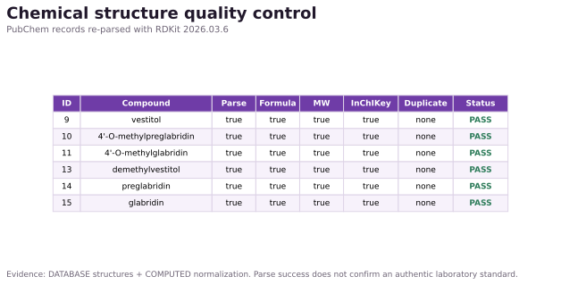
| Compound ID | Name | Formula | RDKit MW | InChIKey | Audit |
|---|---|---|---|---|---|
| 9 | vestitol | C16H16O4 | 272.3000 | XRVFNNUXNVWYTI-UHFFFAOYSA-N | PASS |
| 10 | 4'-O-methylpreglabridin | C21H24O4 | 340.4190 | CFIGHBKJMKQTBW-UHFFFAOYSA-N | PASS |
| 11 | 4'-O-methylglabridin | C21H22O4 | 338.4030 | ZZAIPFIGEGQNHP-AWEZNQCLSA-N | PASS |
| 13 | demethylvestitol | C15H14O4 | 258.2730 | CJZBXHPHEBCWLV-UHFFFAOYSA-N | PASS |
| 14 | preglabridin | C20H22O4 | 326.3920 | HJYNNFAPXVIBTD-CQSZACIVSA-N | PASS |
| 15 | glabridin | C20H20O4 | 324.3760 | LBQIJVLKGVZRIW-ZDUSSCGKSA-N | PASS |
ADMET-AI 2.0.1 was executed locally on all six confirmed structures with its official five-member Chemprop ensembles. An earlier official ADMETlab 3.0 web batch provides an independent platform. Only four definition-matched endpoints are compared; cross-platform probabilities are never averaged.
| Model/database | Status | Records | Reason |
|---|---|---|---|
| ADMET-AI 2.0.1 | COMPLETE | 6 | cached raw export loaded |
| ADMETlab 3.0 | COMPLETE | 6 | cached raw export loaded |
| ProTox 3.0 | BLOCKED | 0 | official sample API script currently returns HTTP 404; no manual export cached |
| VEGA QSAR 1.2.6 | BLOCKED | 0 | Java 17 runtime and VEGA model bundle are not installed |
| admetSAR 3.0 | BLOCKED | 0 | raw export not supplied |
| EPA CompTox | BLOCKED | 0 | CTX API key or official batch export not supplied |
| EPA ECOSAR | BLOCKED | 0 | official ECOSAR/EPI Suite export not supplied |
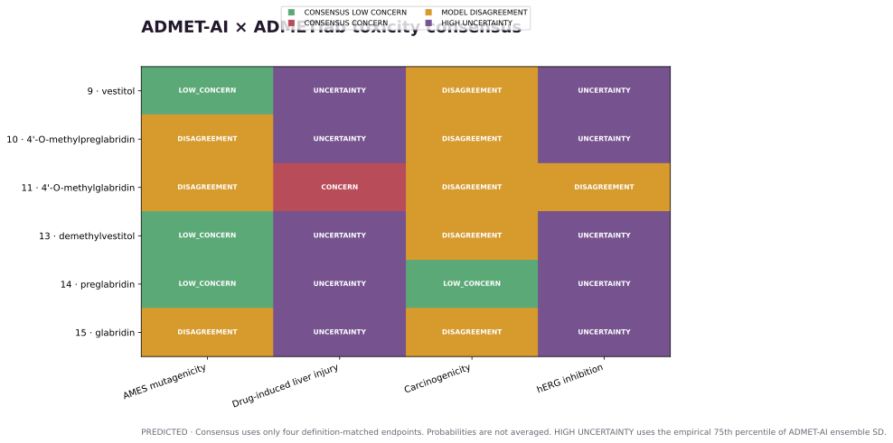
All panels below are programmatically generated from cached model output. Prediction-space plots describe model behavior, not safety rank.
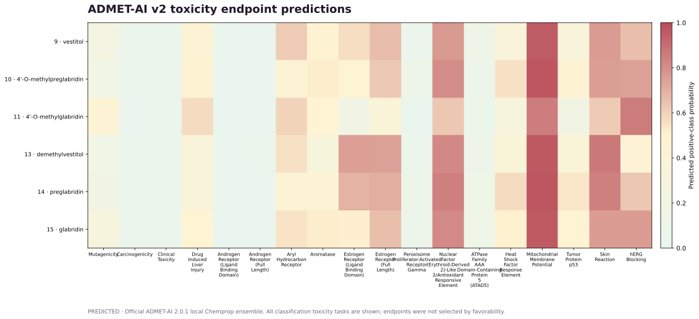
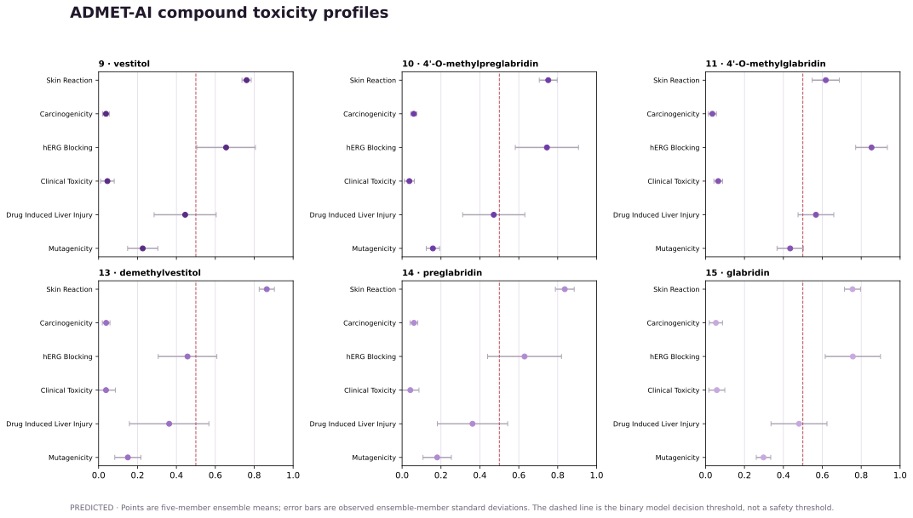
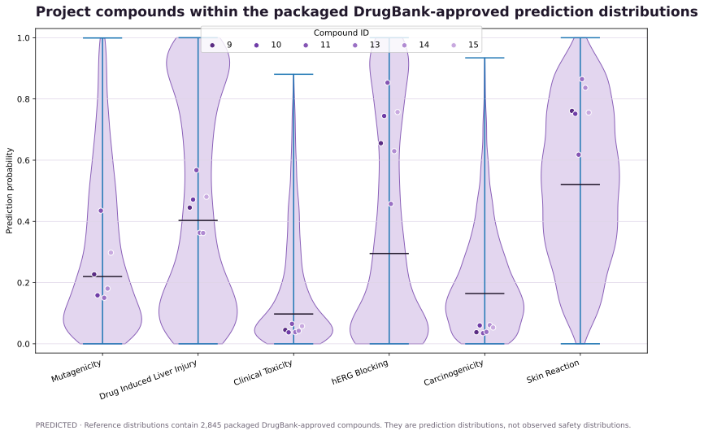
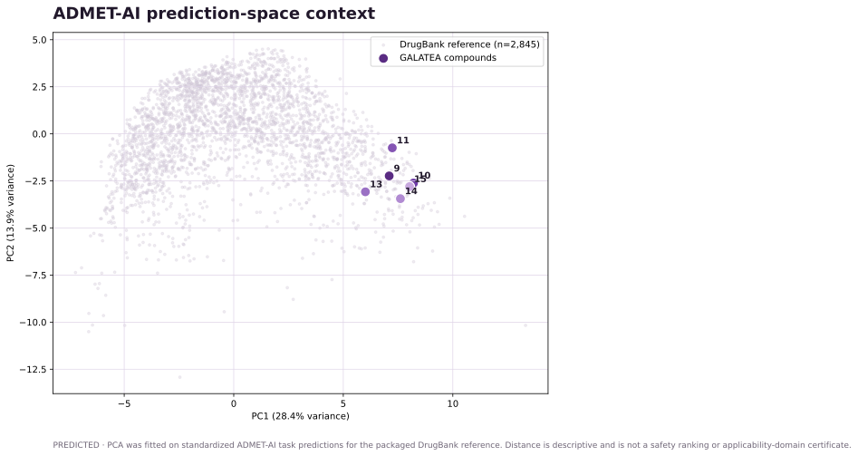
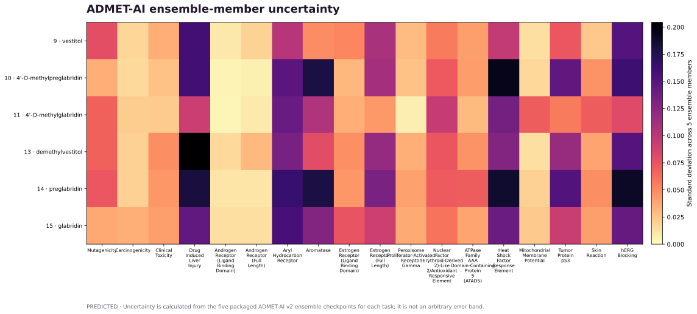
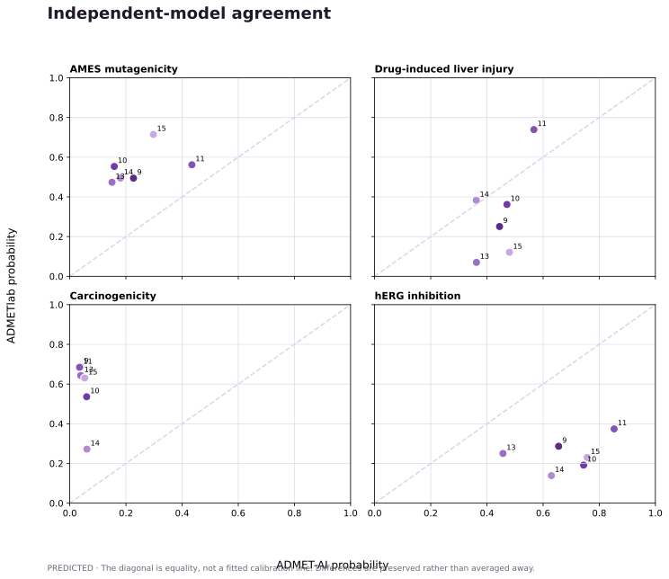
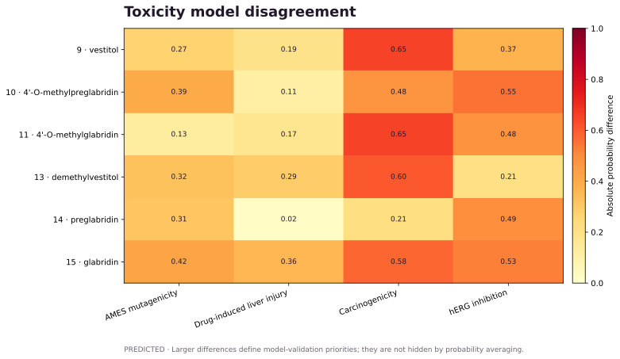
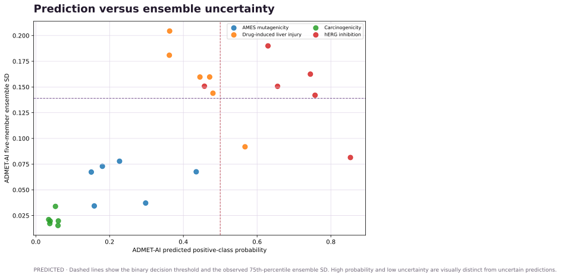
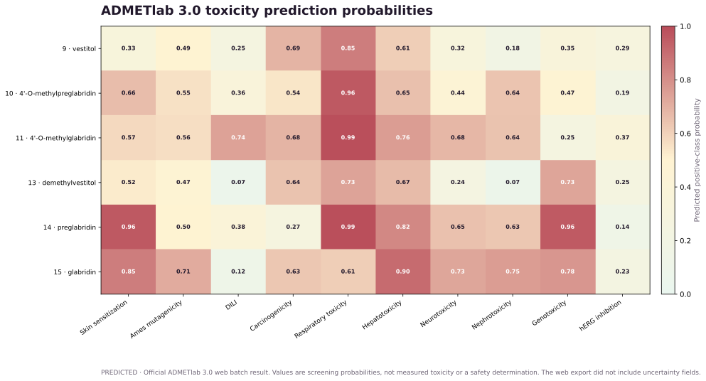
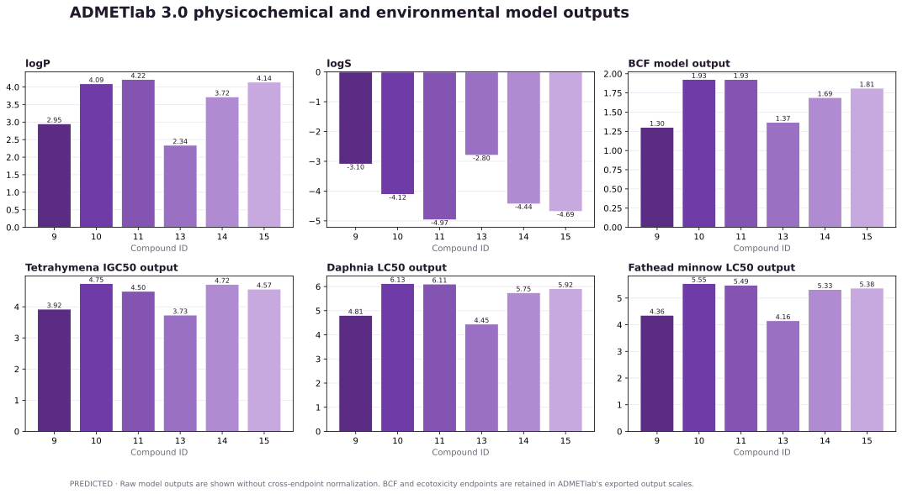
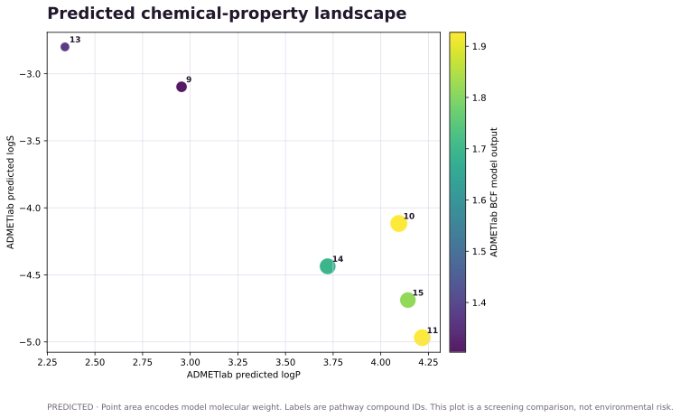
Five nested candidate panels cover 16.67%, 33.33%, 50%, 83.33% and 100% of the six compounds in the project manifest. These are SCENARIO design calculations, not measured analytical performance. The denominator is this six-compound reference set, not the entire biosynthetic pathway.
| Planned compound IDs | Analytes | Coverage (%) | Unmeasured IDs | Evidence |
|---|---|---|---|---|
| 15 | 1 | 16.67 | 9;10;11;13;14 | SCENARIO |
| 11;15 | 2 | 33.33 | 9;10;13;14 | SCENARIO |
| 10;11;15 | 3 | 50.0 | 9;13;14 | SCENARIO |
| 9;10;11;14;15 | 5 | 83.33 | 13 | SCENARIO |
| 9;10;11;13;14;15 | 6 | 100.0 | SCENARIO |
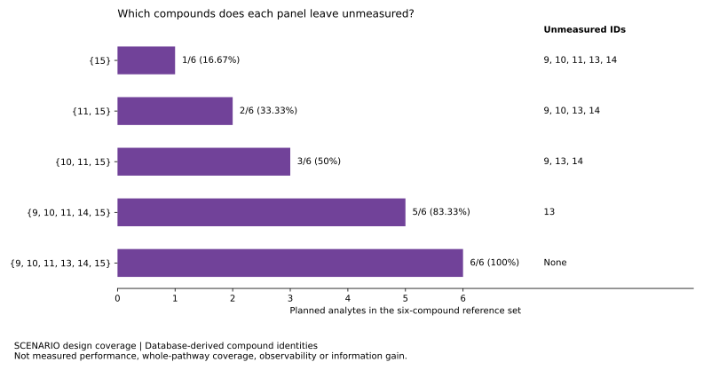
Next validation: verify reaction-level provenance; confirm authentic standards and limits of detection; quantify extraction recovery and assay cost; then compare panel discrimination using a justified dynamic model or matched measurements. Sampling times and solvent choice require separate validation.
Required measurements include raw biological replicates for OD600, compounds 9/10/11/13/14/15, precursor consumption, glabridin titer, purity and recovery. The primary result must show raw points, summary estimates, uncertainty and the stated statistical method.
No G1 versus LLPS measurements are present.
The repository provides the exact input template, including compound 13 and OD600.
Fitting is disabled until real replicate time series are supplied.
CFU before and after approved inactivation is required.
The working functional unit is 1 g purified glabridin. Templates capture actual materials, water, solvents, equipment time, power provenance, recovery, purity and price. No PMI, energy intensity or cost result is reported before product mass and batch inventories exist.
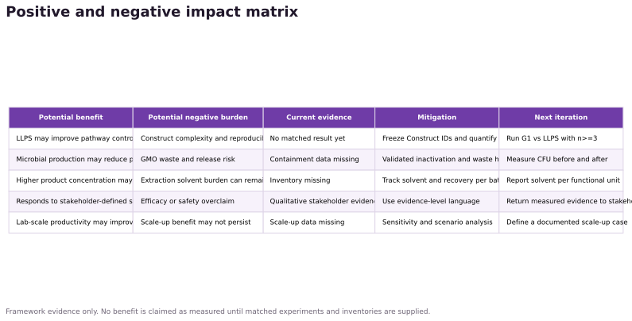
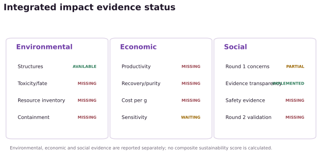
python -m venv .venv
.venv/bin/pip install -r requirements.txt
.venv/bin/python analysis/run_all.pyThe command validates structures, reuses or generates the local ADMET-AI cache, normalizes cached outputs, calculates definition-matched consensus, regenerates figures, rebuilds this site and checks local links. It makes no external API call by default.